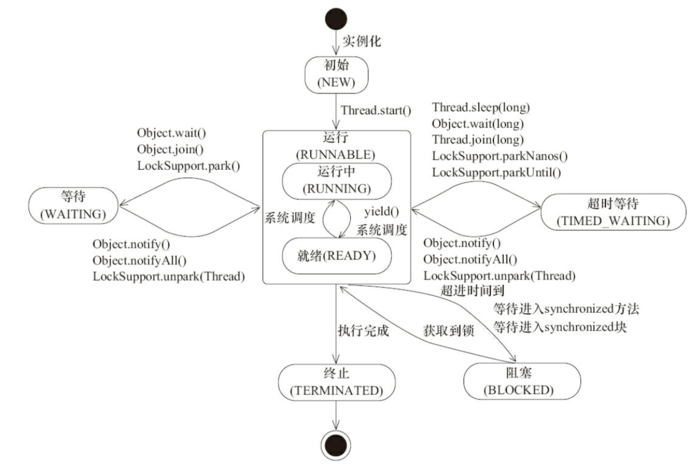

本博客系列是学习并发编程过程中的记录总结。由于文章比较多，写的时间也比较散，所以我整理了个目录贴（传送门），方便查阅。
在Java中，一个线程从创建到消亡会经历新建状态（New）、就绪状态（Runnable）、运行状态（Running）、等待（Waiting）、阻塞状态（Blocked）和死亡状态。在运行过程中，线程会在这几个状态之间流转。

下面对这几种状态做下简单解释：
新建状态（New）： 新创建了一个线程对象，还未调用线程的start()方法。
就绪状态（Runnable）： 线程对象创建后，其他线程调用了该对象的start()方法，该状态的线程位于可运行线程池中，变得可运行，等待获取CPU的使用权。
运行状态（Running）：就绪状态的线程获取了CPU，执行程序代码的状态，还有种可能就是这个线程正在等待其他的系统资源（IO资源等），这种状态也称为Running状态。
阻塞状态（Blocked）：一个线程因为等待监视锁而被阻塞的状态，也称之为阻塞状态。阻塞的线程不会被分配CPU资源。
等待状态（WAITING）：一个正在等待的线程的状态，也称之为等待状态。造成线程等待的原因有三种，分别是调用Object.wait()、join()以及LockSupport.park()方法。处于等待状态的线程，正在等待其他线程去执行一个特定的操作。例如：因为wait()而等待的线程正在等待另一个线程去调用notify()或notifyAll()；一个因为join()而等待的线程正在等待另一个线程结束。处于等待状态的线程不会被分配CPU资源。
超时等待（TIMED_WAITING）：一个在限定时间内等待的线程的状态。也称之为限时等待状态。造成线程限时等待状态的原因有五种，分别是：Thread.sleep(long)、Object.wait(long)、join(long)、LockSupport.parkNanos(obj,long)和LockSupport.parkUntil(obj,long)。
死亡状态（Dead）：线程执行完了或者因异常退出了run()方法，该线程结束生命周期(当时如果线程被持久持有, 可能不会被回收)。
对于线程的新建、就绪、运行和死亡状态，我们都比较好理解。线程的另外3个状态的含义可能会让人比较困惑。下面就来解释下这三种状态的区别：
1. 超时等待状态（TIMED_WAITING）
Java文档官方定义TIMED_WAITING状态为：“一个线程在一个特定的等待时间内等待另一个线程完成一个动作会在这个状态”。调用下面的这些方法会让线程进入TIMED_WAITING状态。
2. 等待状态（WAITING）
Java文档官方定义WAITING状态是：“一个线程在等待另一个线程执行一个动作时在这个状态。”
当线程调用以下方法时会进入WAITING状态：
在对象上的线程调用了Object.wait()会进入WAITING状态，直到另一个线程在这个对象上调用了Object.notify()或Object.notifyAll()方法才能恢复。一个调用了Thread.join()的线程会进入WAITING状态直到一个特定的线程来结束。
3. BLOCKED状态
Java文档官方定义BLOCKED状态是：“这种状态是指一个阻塞线程在等待monitor锁。”